Five directions, all honoring the locked constraints: no background containers, logotype tight to the mark, no subtitle on the main lockup (the subtitle variant is shown separately), letters outlined from Space Grotesk Medium. B, C and D are fully integrated typemarks. Pick a direction; Phase 83 refines the winner into the full system.
A protected current, literally: the headgate shelters the asset; the stream flows through it and keeps going.
Known weakness: Three elements (arch, current, dot); the dot drops out at favicon size.
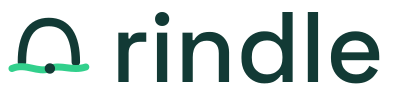
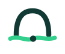
rindle docs# Media, made durable.
The r itself is the channel: its arm keeps travelling, flowing below the baseline toward the rest of the word, carrying one asset. The word has no descenders, so the swash owns that space.
Known weakness: The carried bead is lost below 32px (simplified favicon cut drops it).
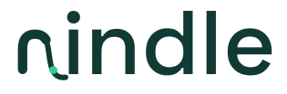
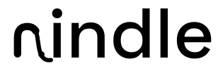
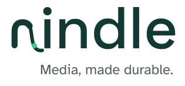
# Media, made durable.
The dot on the i is the original asset branching into two variants - the product mental model written into the name. Branches break above the ascender line.
Known weakness: The full wordmark dies at 16px (all wordmarks do); the favicon is the i-glyph alone.
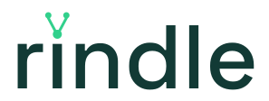
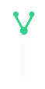
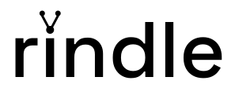
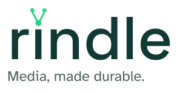
# Media, made durable.
The terminal of the final e keeps going: a thin current trails out of the word, dips below the baseline, and carries one delivered asset. Delivery, not upload.
Known weakness: Needs horizontal room; the favicon pairs with a separate bead-on-current glyph.
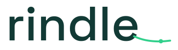
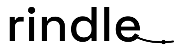
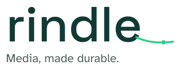
# Media, made durable.
Three inputs converge into one durable current that runs on beneath the first letters - the mark and the type physically interlock.
Known weakness: Three inputs become two at favicon size; the under-run needs clearance below the baseline.
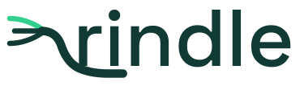
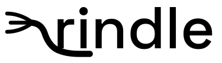
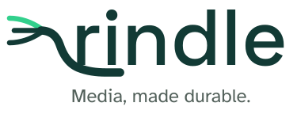
# Media, made durable.